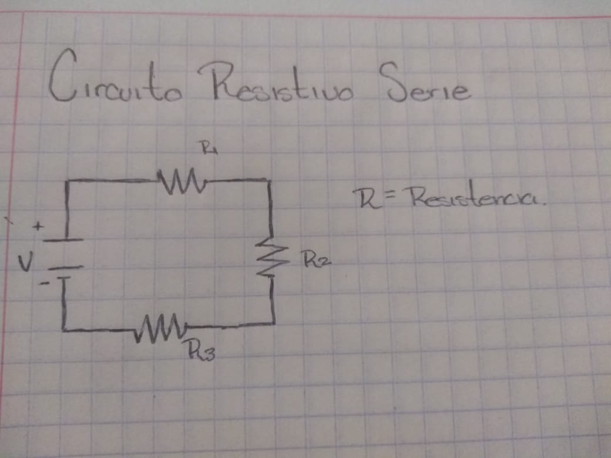
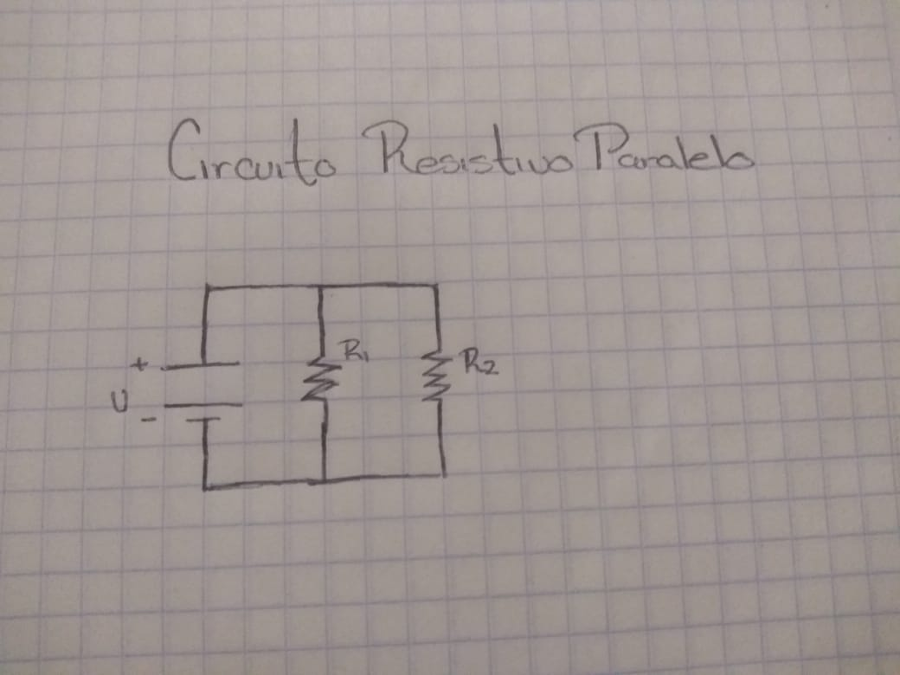

Inductancias
-Una bobina consiste simplemente en un cable conductor enrrollado sobre un material aislante, su funcion es que al pasar a traves de ella una corriente al rededor de la misma se crea un campo magnetico, este campo su funcion es oponerse a los cambios briscos de la intensidad de la corriente.
Las inductancias se miden en Henrios y su simbolo en un circuito es el siguiente:
1.3 Analisis de circuitos electronicos.
Circuito en Serie.
-Un circuito en serie es una configuracion en la que las terminales de los dispositivos (generadores, resistencias, condensadores, inductores, interrumptores, entre otros) se conectan sucesivamente, es decir, el terminal de salida de un dispositivo se conecta a la terminal de entrada del dispositivo siguiente.
Un ejemplo de un circuito en serie seria el siguiente:

Circuito en Paralelo.
-Un circuito paralelo es una conexion de dispositivos (generadores, resistencias, condensadores, bobinas, etc.) en la que las terminales de entrada de todos los dispositivos conectados coinciden entre si, al igual que sus terminales de salida.

Ley Ohm
-La ley de Ohm, es una ley basica de los circuitos electricos. Establece que la diferencia de potencial que aplicamos entre los extremos de un conductor determinado es proporcional a la intesidad de la corriente que circula por el citado conductor.
La formula que nos da la ley de ohm es la siguiente:
V = R * I
Lo cual las letras tienen el siguiente significado:
V = voltaje
R = Resistencia
I = Corriente
"El voltaje es directamente proporcional a la intensidad de corriente aplicada en el circuito por la resistencia del mismo"
Ley de Kirchhoff
Ley de corrientes de Kirchhoff
Esta ley es tambien llamada primera ley de kirchhoff y es comun que se use las siglas LCK para referirse a esta ley. La ley de corrientes de Kirchhoff nos dice que:
"En cualquier nodo, la suma de las corrientes que entran en ese nodo es igual a la suma de las corrientes que salen. De forma equivalente, la suma de todas las corrientes que pasan por el nodo es igual a cero."

Esta formula es valida tambien para circuitos complejos:

Ley de tensiones de Kirchhoff
Esta ley es llamada tambien segunda ley de Kirchhoff, se le conoce como la ley de las tensiones y dice lo siguiente:
"En un circuito cerrado, la suma de todas las caidas de tension es igual a la tension total suministrada. De forma equivalente, la suma algebraica de las diferencias de potencial electrico en un circuito es igual a cero."
De igual manera que la corriente, las tensiones tambien pueden ser complejos, asi: